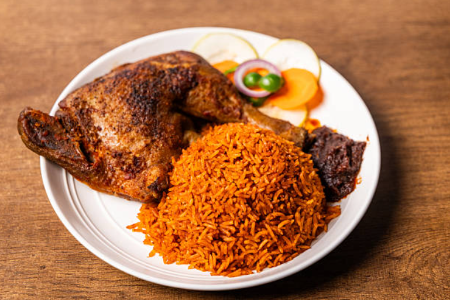

Jollof Rice — West Africa's Favourite One-Pot Wonder
A bold, vibrant one-pot rice dish simmered in a rich tomato and pepper sauce. Jollof rice brings people together at every celebration, loved for its irresistible flavour and unforgettable colour.
Preparation Time
- Preparation: 15 minutes
- Cooking: 45 minutes
- Total: 1 hour
Ingredients
- 3 cups of long grain parboiled rice
- 4 large tomatoes
- 2 red bell peppers
- 3 pieces of onion
- 3 tablespoons of tomato paste
- 1/4 cup of vegetable oil
- 2 cloves of garlic
- 1 teaspoon of ginger
- 2 bay leaves
- 1 teaspoon of curry powder
- 1 teaspoon of thyme
- 2 stock cubes
- Salt to taste
- 4 pieces of fish
- 4 pieces of chicken
- 3 cups of chicken or vegetable stock
Instructions
- Season the proteins: Season the chicken and fish with salt, garlic and ginger, then fry until golden. Set aside.
- Blend the base: Blend the tomatoes, bell peppers and onion into a smooth paste.
- Fry the paste: Heat oil in a large pot and fry the tomato paste for 2 minutes.
- Spice it up: Add garlic, ginger, curry powder, thyme and bay leaves.
- Combine the sauce: Add the blended mixture and cook until the oil separates
- Add the rice: Stir in the rice and coat it well with the sauce.
- Pour the stock: Pour in the stock and stir gently
- Simmer: Cover and simmer on low heat for 30-35 minutes.
- Check and stir: Stir occasionally and add water if needed.
- Serve: Once tender, fluff with a fork and serve hot with the fried chicken and fish
Nutrition
The table below shows the nutritional values per serving for this Jollof rice recipe, including the chicken and fish.
| Nutrient | Amount |
|---|---|
| Calories | 320cal |
| Carbohydrates | 58g |
| Protein | 7g |
| Fat | 8g |